MAIORES LUTADORES DA HISTÓRIA
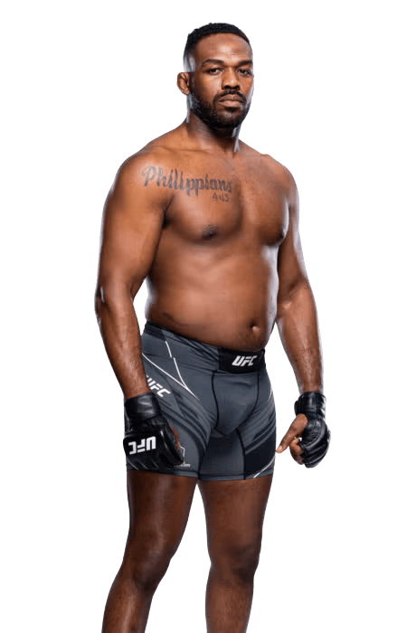
JON JONES
Considerado por muitos um dos maiores lutadores da história do MMA, Jon Jones construiu uma carreira marcada pelo domínio e pela versatilidade. Ex-campeão dos meio-pesados e dos pesados do UFC, ficou conhecido por seu alcance impressionante, criatividade nos golpes e excelente wrestling. Sua capacidade de controlar adversários de diferentes estilos fez dele um dos nomes mais importantes do esporte..png)
Anderson "Spider" Silva
Anderson Silva é um dos maiores representantes brasileiros na história do MMA. Conhecido como Spider, marcou época no UFC com seu estilo técnico, movimentos imprevisíveis e precisão nos golpes. Foi campeão dos pesos-médios e protagonizou uma das maiores sequências de domínio da organização, com dez defesas consecutivas de cinturão.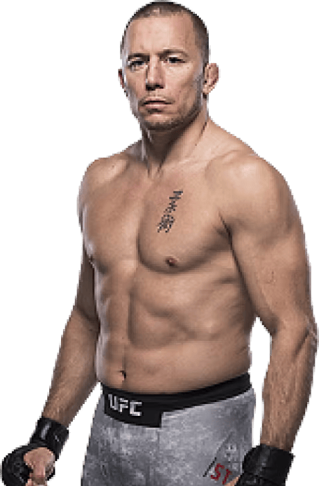
George St Pierre
Georges St-Pierre, conhecido como GSP, é considerado um dos lutadores mais completos da história do MMA. O canadense foi campeão dos meio-médios e dos médios do UFC, destacando-se pelo wrestling, inteligência estratégica e excelente preparo físico. Sua capacidade de adaptar o jogo de acordo com cada adversário foi uma das grandes marcas de sua carreira.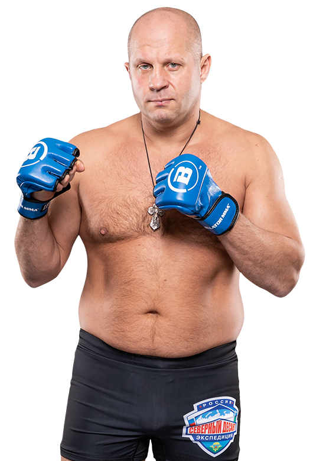
Fedor Emilianenko
Fedor Emelianenko é uma verdadeira lenda do MMA, especialmente por seu domínio na categoria dos pesos-pesados durante sua passagem pelo PRIDE. O russo ficou conhecido por sua força, resistência, velocidade e habilidade tanto na luta em pé quanto no chão. Durante anos, foi considerado por muitos o melhor peso-pesado do mundo.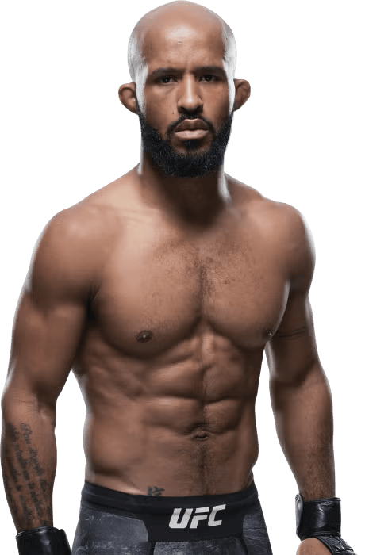
Demetrious
Conhecido como Mighty Mouse, Demetrious Johnson é reconhecido por sua velocidade, técnica e versatilidade dentro do octógono. Foi campeão dos pesos-moscas do UFC e estabeleceu um recorde de 11 defesas consecutivas de cinturão. Sua capacidade de combinar wrestling, jiu-jitsu e trocação fez dele um dos atletas mais técnicos da história do MMA.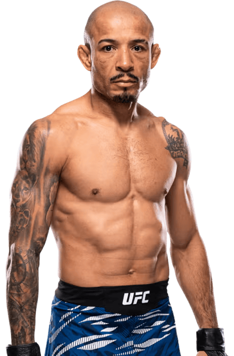
José Aldo
José Aldo é um dos maiores nomes do MMA brasileiro. Conhecido por seus poderosos chutes baixos, velocidade e excelente defesa de quedas, dominou a categoria dos pesos-penas durante 6 anos. Foi campeão do WEC e do UFC, construindo um legado marcado pela consistência e por grandes apresentações contra alguns dos melhores lutadores do mundo.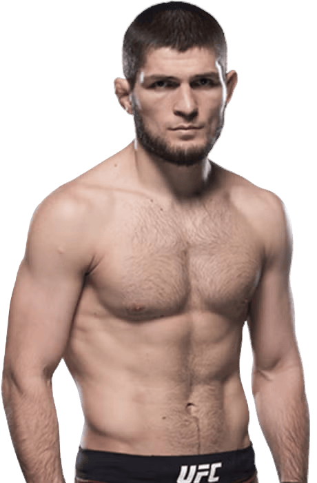
Khabib Nurmagumedov
Khabib Nurmagomedov ficou conhecido por seu domínio absoluto no wrestling e no grappling. O russo encerrou sua carreira invicto, com 29 vitórias e nenhuma derrota, conquistando o cinturão dos pesos-leves do UFC. Sua capacidade de pressionar, derrubar e controlar os adversários no chão fez dele um dos lutadores mais dominantes de todos os tempos.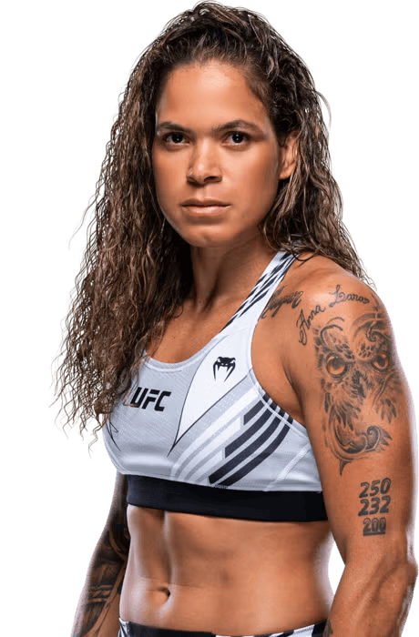
Amanda Nunes
Amanda Nunes, conhecida como Leoa, é considerada uma das maiores lutadoras da história do MMA feminino. A brasileira conquistou os cinturões dos pesos-galos e dos penas do UFC, tornando-se campeã de duas categorias simultaneamente. Com uma combinação de potência, técnica e agressividade, venceu grandes nomes do esporte e deixou um legado histórico.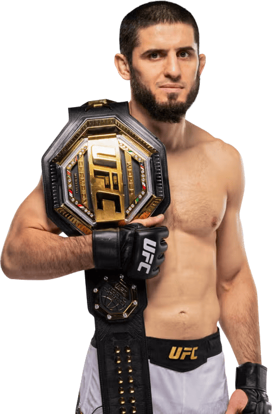
Islam Makhachev
Islam Makhachev é um dos grandes representantes da escola de luta do Daguestão com 29 vitórias e apenas 1 derrota rm sua carreira. Conhecido por seu wrestling, controle no chão e evolução na trocação, conquistou o cinturão dos pesos-leves e do peso-meio-médio do UFC e se destacou pela capacidade de neutralizar diferentes estilos de luta. Sua disciplina e inteligência tática são características fundamentais de seu sucesso.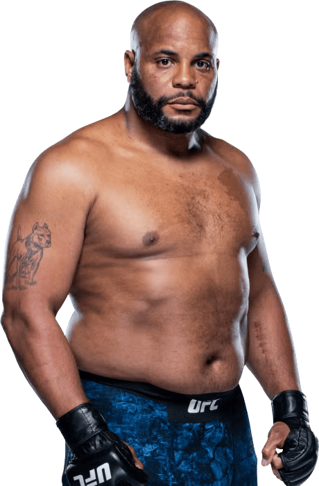
Daniel Cormier
Daniel Cormier é um dos poucos atletas que conseguiram conquistar cinturões em duas categorias do UFC: meio-pesado e pesado. Com uma carreira marcada pelo wrestling de alto nível, força física e inteligência dentro do octógono, enfrentou alguns dos maiores nomes da história do esporte. Além de lutador, também se tornou uma importante personalidade do MMA como comentarista.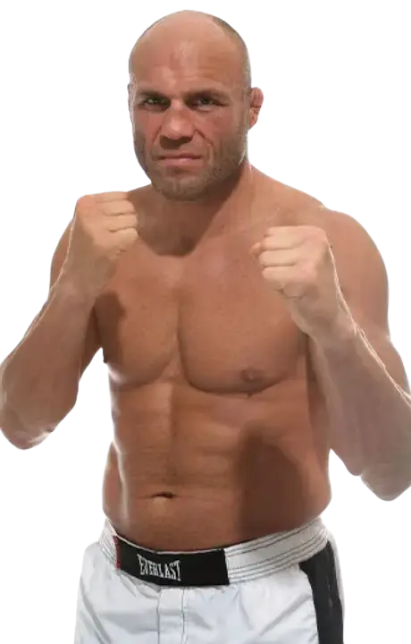
Randy Couture
Randy Couture foi um dos pioneiros do MMA moderno e uma figura fundamental na história do UFC. O americano conquistou títulos nas categorias dos meio-pesados e pesados, destacando-se pelo wrestling, resistência e experiência. Sua carreira mostrou que estratégia, disciplina e conhecimento técnico podem ser tão importantes quanto a força física.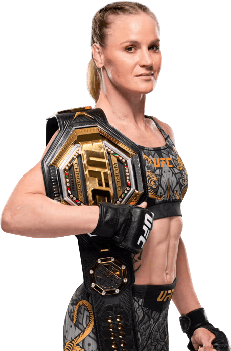
Valentina Shevchenko
Valentina Shevchenko é uma das maiores referências do MMA feminino. Ex-campeã dos pesos-moscas do UFC, a atleta do Quirguistão é conhecida por sua precisão na trocação, domínio do muay thai e excelente capacidade defensiva. Sua técnica e inteligência tática fizeram dela uma das lutadoras mais respeitadas de sua geração.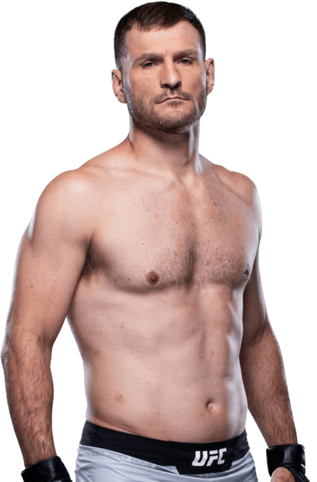
Stipe Miocic
Stipe Miocic é considerado um dos maiores pesos-pesados da história do UFC. O americano de origem croata conquistou o cinturão da categoria e estabeleceu o recorde de três defesas consecutivas em sua primeira passagem como campeão. Seu estilo combina boxe eficiente, wrestling e resistência, características que o tornaram um adversário extremamente difícil.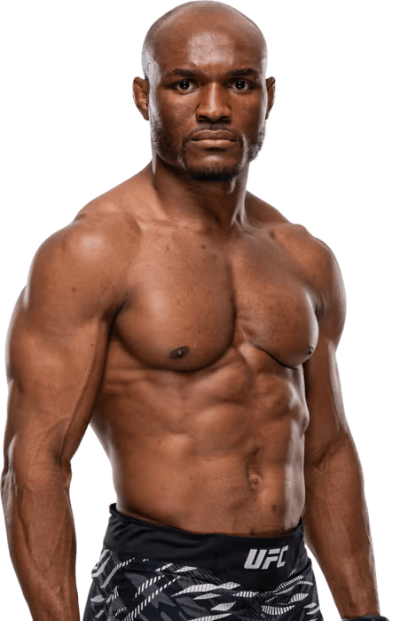
Kamaru Usman
Conhecido como Nigerian Nightmare, Kamaru Usman conquistou o cinturão dos meio-médios do UFC e se tornou um dos campeões mais dominantes da categoria. Seu wrestling, força física e pressão constante foram fundamentais para sua sequência de vitórias e defesas de título. Também desenvolveu uma trocação poderosa, tornando-se um lutador bastante completo.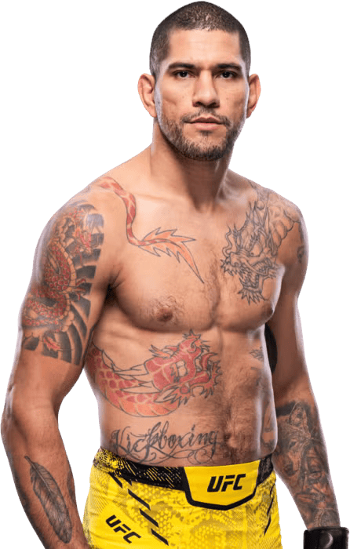